怪物图鉴
共 154 种怪物, 按出没区域分类
一般怪物16
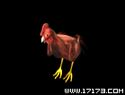
鸡
生长或游荡在比奇城居民区附近，如物品商店、银杏树谷和边界村等处，可以挖肉。
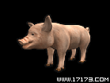
猪
从等级1开始可以宰杀的动物，为了找出吃的东西村子附近里走动，比鸡稍强，可以挖肉，但是一不…
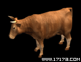
牛
从等级1开始都可以宰杀的动物，由于体格大，可能有些人不敢去惹它，但是请放心，它非常的弱。…
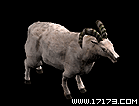
羊
羊生活在城区和村庄，能提供成块的肉。
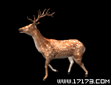
鹿
生活在城区和村庄，能提供成块的肉。
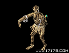
稻草人
在村外的森林里面，你会遇到这种生物。人们用他们保护庄稼不受害鸟的袭击。但是稻草人会在邪恶…
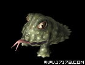
蛤蟆
如果你达到第四级，你就能很容易地杀死这个怪物。它们出没在河边，数量不多。
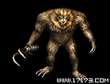
多钩猫
一种大多生活在荒野中的猫，能够步行，并会在邪恶和未知的力量驱使下变大。它偷窃人们的钩子用…
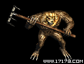
钉耙猫
与多钩猫类似，它一般生活在荒野中，在邪恶和未知的力量驱使下变大。它偷窃人们的耙子做武器。
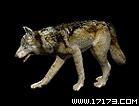
狼
狼是生活在荒漠和牧场的肉食类动物。它一般猎羊为食，但有时也会去居住区袭击人。它们常常群体…
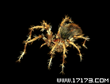
毒蜘蛛
毒蜘蛛几乎出现在各个角落。它甚至能够隔着拐角向目标进攻和喷射毒液且命中率高，一旦被它击中…
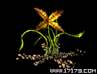
食人花
生长在森林里的以人为食的植物，不能移动并隐藏在地下。当人们接近时它会跃起来发动攻击。食人…
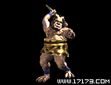
半兽人
到第七级时你将经常猎取这种生物，危险之处在于它们常常结群行动。通常它会丢下青铜宝剑、短剑…
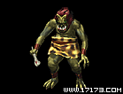
半兽战士
一般沃玛有30年的寿命，但有一种沃玛的生命可长达50-200年。如果奥玛活过50年，它的…
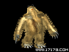
森林雪人
它通常称生活在森林。它整个的身体覆盖着长毛，鼻子也很长。森林雪人用它锋利的爪子进攻，尽管…
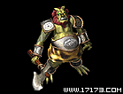
半兽勇士
奥玛部落的领袖。它在绵延百年的战争中领导奥玛进行侵略，是具有杰出智慧和战斗力的奥玛。如果…
毒蛇山谷4
盟重6


天然洞穴8
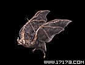
山洞蝙蝠
在地牢里到处都是这种飞翔的生物。尽管他们的攻击力不强，但它们群起进攻时还是躲远些为好。
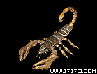
蝎子
它们仅现于地牢里，当你达到15级时可以猎捕它们。人多的时候不会大量出现。不过要是一下子碰…
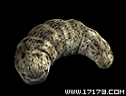
洞蛆
在地牢里他们蠕动着，并通过喷射气体向你进攻。他们体力较差但喷射的气体能使你瘫痪。一旦瘫痪…
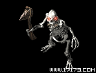
骷髅
死去的奥玛复苏而成为骷髅，它们出现在地牢里，以石斧做武器，有比奥玛更强的攻击力。他们死去…
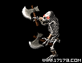
掷斧骷髅
死去的奥玛复苏的另一种形式，也出现在地牢里。它们双手挥舞并投掷沉重的斧头。他们一起进攻时…
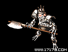
骷髅战士
在地牢里，骨头战士双手挥舞着大斧，有强大的攻击力和能量，所以很难被杀死。
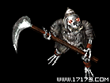
骷髅战将
你会在奥玛坟墓的第二层和自然谷发现他们。在所有的骷髅类角色中他们有相对强大的攻击力和能量…
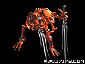
骷髅精灵
也出现在地牢里，并可以肯定是半兽勇士死去后的重生，有着恶魔般的红色外表。不象其它骷髅类，…
银杏废矿6
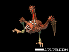
蜘蛛娃
生活在银杏村周围废矿里的奇怪的虫子。它的样子像是把青蛙和蜘蛛糅合在了一起了。不要小看它长…
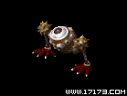
胞眼虫
生活在银杏村周围废矿里的奇怪的虫子，只有一只大眼睛和两只脚。它用它的大眼睛攻击你，虽然不…
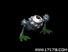
胞眼虫
生活在银杏村周围废矿里的奇怪的虫子，只有一只大眼睛和两只脚。它用它的大眼睛攻击你，虽然不…
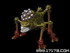
多脚虫
生活在银杏村周围的废矿里的奇怪的虫子，头上有无数只眼睛。它乍一看相只蜘蛛，走路一跳一跳的…
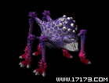
多脚虫
生活在银杏村周围的废矿里的奇怪的虫子，头上有无数只眼睛。它乍一看相只蜘蛛，走路一跳一跳的…
红甲虫
小boss 暴钱,神水,祝福油
矿区6
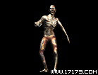
僵尸
僵尸原先是一个矿山中的矿工。矿山在奇怪力量导致的地震中坍塌，他们被困其中。他们死去后重生…
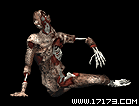
烂僵尸
由腐烂程度较深的尸体复活而成，缺胳膊少腿四肢不全，只能爬行移动。不容易被发现，他们抓住人…
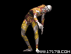
老道僵尸
除了全身有看不懂的文字，和一般僵尸没什么两样。他也是主要以露着骨头的手猛击的方式攻击，如…
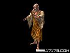
法老僵尸
是因犯下错误而被赶出庙的和尚的尸体受山洞中奇怪力量复活而成。平常在地下，一旦听到有脚步声…
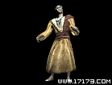
魔咒僵尸
他生前是使用强有力的魔法的法师，他的尸体原先放在山洞附近，是受奇怪力量作用成为僵尸，会使…
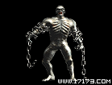
尸王
尸王是僵尸之王，生活在死矿中。它能在死尸中注入奇怪的气体使他们成为僵尸。原先他拥有强大的…
潘夜岛2
沙漠绿洲11
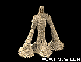
沙鬼
平时隐藏起来，一旦行人经过附近，就立刻现身攻击。因为它的身体是沙子组成的， 所以在沙漠里…
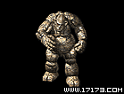
沙漠石人
由石头垒成的巨大怪物。 坚硬的石头身体使他具有超强的攻击力和防御力。 主要现身在戈壁上，…
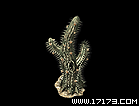
沙漠树魔
与沙漠中的仙人掌长得一摸一样，故敌人往往意识不到危险。但敌人靠近时，它会射出带刺的果实发…
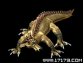
沙漠蜥蜴
身长3米（人类身高才1.7米），利用牙齿和尾巴来攻击敌人。锐利的牙齿，尾巴上的针能增强进…
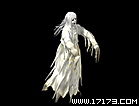
夜行鬼
它们是在黑暗长夜里游荡在沙漠深处的冤魂。碰到行人时，它们会把行人杀死并夺取其肉体。 夜行…
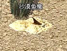
沙漠鱼魔
毒非常厉害
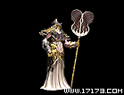
沙漠风魔
由于长期的沙漠生活，导致他的防御力很强，虽然没有直接的攻击力，但是手中的扇子据说可以呼风…
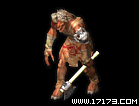
诺玛
诺玛族中属于下级的诺玛，在沙漠里游荡，寻找周边的攻击对象和找出制造各种各样道具的资料来做…
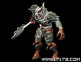
诺玛将士
具有很强的体力和力气的长官级诺玛，性格暴躁。不像下级诺玛那样到沙漠里去采集和侦查，而是专…
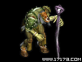
诺玛法老
守卫诺玛王的守卫，它们具有出色的力气和体力，但最重要的是会用魔法。4只为一组，一旦诺玛王…
大法老
守卫诺玛王的守卫，它们具有出色的力气和体力，但最重要的是会用魔法。4只为一组，一旦诺玛王…
灌木林8
月魔蜘蛛
被赤月恶魔的魔力变成畸形的蜘蛛，有着蜘蛛的身体和蝙蝠的翅膀，可以在飞行中攻击。身体成大球…
独眼蜘蛛
同样也是被赤月恶魔改造过的怪物。虽然不大，但它有坚硬强壮的身体和剃刀一样锋利的牙齿，闪着…
天狼蜘蛛
同样是曾经很美丽的蜘蛛，如今它也受到了赤月恶魔强大魔力的影响。后背上红色的瘤和腹部锋利的…
幻影蜘蛛
这种蜘蛛的幼虫寄生在老树的根部或者一些动物的体内，从寄主身上获取营养。一旦找到合适的新居…
爆裂蜘蛛
它是幻影蜘蛛的幼虫，平时隐藏在幻影蜘蛛身体里。当幻影蜘蛛受到攻击或猎物靠近时会不顾一切的…
黑角蜘蛛
如果看到巨型蜘蛛这样的怪物向你冲过来，多数情况下你都会惊骇得夺路而逃。它的身上长满权杖一…
花色蜘蛛
这种蜘蛛看起来就像一朵美丽的花。赤月恶魔把这种巨大的怪物变成了一种用外表诱惑猎物，再用毒…
八脚首领(小BOSS)
八脚首领是由蜘蛛中最强的黑角蜘蛛变异而来，隐藏在灌木丛深处，被大群的蜘蛛保护着，因为被赤…
失乐园6

猿猴战士
生活在树林中的猴子被震天魔神的邪恶力量催化称为怪物。看起来和生活在茂密树林中的一版猴子没…
猿猴战将
成怪的猴子寿命比一般猴子长，达到一定年龄的猴子毛色会变白。猿猴战将和猿猴战士能力上没有很…
魔神怪1
陷入癫狂的王国的文明很快便没落下去，倒退了几百年。它们丧失了所有生产手段，仅依靠最原始的…

魔神怪2
已经丧失了本身的意识和思想的怪物只剩下无止境的敌对情绪和杀戮本能。它们使用的短圆形剑由于…

巨象兽
对这种怪物的起源，有两种说法。第一种说法是生活在茂密森林中的大象被震天魔神选中，催化为怪…
疯狂魔神盗1
已经丧失了本身的意识和思想的怪物只剩下无止境的敌对情绪和杀戮本能。它们使用的短圆形剑由于…
赤月山谷4
蚂蚁洞6
劳动蚂蚁
蚂蚁种族中主要负担各种杂事的工人。 从事多种活动，比如侦察、打猎、运输等等。 一般不参与…
蚂蚁战士
负责战斗的蚂蚁。 主要从事侦察, 打猎, 战斗等等.有时也可以远征到其他地方， 但主要还…
爆毒蚂蚁
这种蚂蚁的小腹上有用来喷射毒汁的射管，可以对敌人进行远程攻击。 但身体上用来近距离格斗的…
盔甲蚂蚁
这是极其恐怖的一种巨大蚂蚁，在前额有大得惊人的巨大钳子，凶狠残暴，对敌人毫无怜悯之心。它…
蚂蚁道士
这种特殊的蚂蚁有着畸形发达的巨大腹部。它利用小腹中的营养物可以为其他虚弱的蚂蚁恢复体力，…
蚂蚁将军
这是极其恐怖的一种巨大蚂蚁，在前额有大得惊人的巨大钳子，凶狠残暴，对敌人毫无怜悯之心。它…
虫峡谷16
跳跳蜂
这是一种长着翅膀的昆虫。相比它巨大的身体那翅膀显得很小，所以它们无法飞翔，而是通过快速跳…
蜈蚣
它们居住在洞穴深处，尽管没有很强的力量，但快速的行动和攻击却能使你防不胜防。
沃毒蜈蚣
它们居住在洞穴深处，尽管没有很强的力量，但快速的行动和攻击却能使你防不胜防，尤其是对道士…
洞穴蜈蚣
它们居住在洞穴深处，尽管没有很强的力量，但快速的行动和攻击却能使你防不胜防，尤其是对法师…
邪恶蜈蚣
它们居住在洞穴深处，尽管没有很强的力量，但快速的行动和攻击却能使你防不胜防，尤其是对战士…
钳虫
这是一种用长在前额的巨大的、锋利的钳子进攻的，强有力的昆虫类生物。它们有坚硬的外壳保护身…
白眼钳虫
这是一种用长在前额的巨大的、锋利的钳子进攻的，强有力的昆虫类生物。它们有坚硬的外壳保护身…
沃角钳虫
这是一种用长在前额的巨大的、锋利的钳子进攻的，强有力的昆虫类生物。它们有坚硬的外壳保护身…
青铜钳虫
这是一种用长在前额的巨大的、锋利的钳子进攻的，强有力的昆虫类生物。它们有坚硬的外壳保护身…
蝴蝶虫
绿色的大昆虫。背上长着坚硬的长刺。防御力弱，但长刺的威力是不能忽视的。据说完全发育后会变…
黑色恶蛆
它们由蛆的尸体变异而来，以高速旋转的身体为武器向人们进攻。它们会对所有靠近的人发起攻击，…
白月黑色恶蛆
它们由蛆的尸体变异而来，以高速旋转的身体为武器向人们进攻。它们会对所有靠近的人发起攻击，…
金刚黑色恶蛆
它们由蛆的尸体变异而来，以高速旋转的身体为武器向人们进攻。它们会对所有靠近的人发起攻击，…
沃毒黑色恶蛆
它们由蛆的尸体变异而来，以高速旋转的身体为武器向人们进攻。它们会对所有靠近的人发起攻击，…
邪恶钳虫
这种巨大的钳虫在相当长的时期里已经起了变异，不能与普通的钳虫相比。它们几乎能够毫无怜悯地…
触龙神
这是一种巨大的千年蜈蚣，出现在死亡谷的深处。它们已经有呼风唤雨的能力，所以常被看成是神，…
罪孽洞穴2
石阁庙7
红野猪
它们挥舞巨大的棒子攻击入侵者。一旦发现敌人，它们会跑起来并残忍地抡起大棒进攻。它们超乎想…
黑野猪
红色野猪变异而来，比他们的祖先更加迅速和灵活。不仅保持了巨大的可怕力量，更快的动作会给任…
白野猪
它们是红色野猪的领头者，不知道它们已活了多久。由于更长的寿命，他们的皮肤变白，而且比红色…
角蝇，蝙蝠
这是一种有着象蝙蝠那样的翅膀的有毒生物. 长在它背部的刺没有毒液但能造成不少疼痛。如果你…
楔蛾
它们令人不快地飞在洞窟中，以喷出毒液使其它生物窒息后在尸体上产卵。它们全身常常淌下绿色的…
蝎蛇
这是一种令人不快的，穿着盔甲，有着大钳子的蛇。它那悬着的巨大的眼睛可以望向任何方向。除了…
邪恶毒蛇
它比蝎蛇更大的体形和更强的破坏力。皮肤上的花纹具有魔力，保护着它，所以能经受一般的魔法攻…
沃玛神殿8
粪虫
它们出现在沃玛神殿。它们本来是沃玛教众，但在沃玛教主召唤时被邪恶可怕的力量变成奇怪的动物…
暗黑战士
黑暗出现在沃玛神殿。它曾是沃玛教的成员，但在沃玛教主复活后被邪恶和有害的力量变成奇怪的生…
沃玛战士
它们保卫着沃玛神殿。他们曾是沃玛教的成员，沃玛教主复活后他们被杀死，死后的尸体变成沃玛战…
沃玛勇士
沃玛勇士同样保卫着神殿，他们曾是沃玛教的成员，沃玛教主复活后他们被杀死，死后的尸体变成沃…
沃玛战将
沃玛神殿的保卫者，他们曾是沃玛教的成员，沃玛教主复活后他们被杀死，死后的尸体变成沃玛战将…

火焰沃玛
它们出现在沃玛神殿，曾是沃玛教的成员，沃玛教主复活后他们被杀死，死后的尸体变成火焰沃玛。…
沃玛卫士
沃玛卫士在神殿中保卫沃玛教主，并为保护教主重生竭尽全力。他们将魔力吹进沃玛教徒身上，使他…
沃玛教主
是个强大的魔鬼，被沃玛教徒奉为神明而被追随。当他们试图知道如何重生沃玛神的时候曾用1万沃…
祖玛神殿6
潘夜石窟6
潘夜神殿9
潘夜战士
他是支配畜界的潘夜族的战士，有着牛的样子。他追随潘夜牛魔王入侵人界，牛魔王被封，他也沉睡…
潘夜风魔
他是支配畜界的潘夜族的战士，和沃玛战士一样是牛的样子。潘夜族中有借风、云、火、冰的力量的…
潘夜云魔
他是支配畜界的潘夜族的战士，和沃玛战士一样是牛的样子。潘夜族中有借风、云、火、冰的力量的…

潘夜火魔
他是支配畜界的潘夜族的战士，和沃玛战士一样是牛的样子。潘夜族中有借风、云、火、冰的力量的…
潘夜冰魔
他是支配畜界的潘夜族的战士，和沃玛战士一样是牛的样子。潘夜族中有借风、云、火、冰的力量的…
潘夜左护卫
潘夜牛魔王的两个护卫之一。他有太阳（黑太阳）的灵气。在魔界有着相当高的地位，威力不亚于潘…
潘夜右护卫
潘夜牛魔王的两个护卫之一。他有月亮（黑月亮）的灵气。和潘夜左护卫一样在魔界有着相当高的地…
潘夜鬼将
跟潘夜战士非常像的一个小BOSS。 生命：2000 可暴:潘夜牌武器
潘夜牛魔王
他是统治畜界的魔王之一，是牛的样子。很久以前为了统治人界，他和其他几个魔闯入进来，但被传…
神舰10
触角神魔
兼备章鱼和蜗牛的形状。靠近敌人后，伸出长长的触角贴在敌人身上进行电击，伤害敌人。
爆毒神魔
从章鱼变形而来的怪物，头顶的嘴可以喷出腐蚀性物质。通过用嘴喷射腐蚀性物质来发起进攻，属于…
恶性怪
利用尖锐有利的指甲挠抓对方，加以伤害。
海神将领
形似海豹，有肥大的身体和巨大的尾巴和鳍。使用巨大的尾巴和鳍拍打地面，通过产生的震动伤害对…
犬猴魔
结群而行，进攻尸体和落伍的小动物，外形结合了狗和猴子的特点，前肢非常发达，但因为后肢相对…
神舰守卫
守卫神舰的士兵，用轻型防御道具和长枪武装自己。
轻甲守卫
身穿十分轻便的盔甲，极为轻巧快捷的移动速度会让对方混乱。盔甲里面没有实际身体，而是一种雾…
红衣法师
该魔法师浑身上下用一种红色网套罩起来，会发起使用很强的魔法进行远距离进攻。死掉后，身体会…

霸王守卫
保护霸王教主的战将，用奇形怪状的长枪和带有魔法的盔甲武装自己，毁灭所有违背霸王教主旨意的…
霸王教主
支配整个神舰的帝王。拥有超出想象的十分巨大的身体，把实体隐藏在刻有奇异纹路的盔甲里面，让…